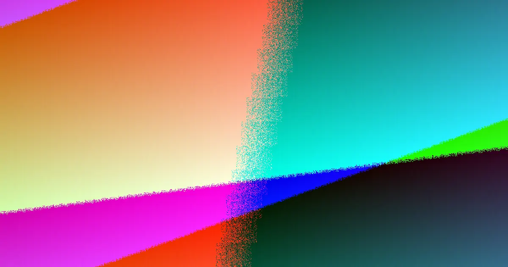

Perth retaining wall quotes rest on an indicative installed rate of roughly $250 to $600 per square metre of wall face, and that figure excludes GST, excavation, drainage and difficult access. Western Australian permit exposure generally starts once a wall retains more than 0.5 metres of ground, and the published service guide covers eight wall types. Comparable pricing comes from matching scope, site conditions and exclusions, not from the headline metre rate alone.
For local buyers, retaining wall contractors perth cost guide so the real task is reading what sits behind each number.
Retaining Wall Contractors Perth Cost Guide Explained
The published Perth guide frames installed wall face pricing at about $250 to $600 per square metre. That band is a starting signal, not a quote. Because GST, excavation, drainage and difficult access sit outside the indicative range, two contractors can honestly price the same wall face and still land far apart once site preparation is counted. Readers wanting the broader material context can refer to the guide to retaining wall contractors in Perth before comparing numbers.
The practical reading is simple: a cheap metre rate with unstated exclusions may cost more than a higher rate where spoil handling, subsoil drainage and reinstatement are itemised. Price follows scope, and scope follows ground conditions.
Reading Two Quotes That Look Identical
When totals cluster near each other, the differences hide in the line items. A comparable written quote should state each of the following plainly:
- Whether supply and installation are both included, or supply only
- Excavation depth, spoil removal and backfill assumptions
- Agricultural pipe, gravel and discharge detail for subsoil drainage
- Engineering input and any permit support, including who confirms the approval position
- Allowances for tight access, sloping sites and reinstatement around the finished wall face
If two quotes carry the same wall face rate but different excavation allowances, they are pricing different jobs. Asking for exclusions in writing before signing turns a guess into a comparison.
Where Approval Costs Enter The Budget
In Western Australia a retaining wall generally triggers building permit requirements once it retains more than 0.5 metres of ground. Approval can also apply to a wall of any height where it connects to other building work, affects or protects adjoining land, or forms part of a boundary wall or substantial dividing fence. The published guide points homeowners toward the AS 4678 design standard and the Certificate of Design Compliance process as matters to raise with the contractor.
Permit and engineering lines are not padding. They reflect the paperwork a taller or boundary-affected wall attracts, and they belong in the quote conversation from the outset rather than after excavation starts.
Ground Conditions That Shift The Number
Perth is not one ground type, and the guide treats that as the first pricing filter:
- Coastal sand plain blocks, where limestone is the common local material
- Darling Scarp foothill sites, where rock and slope shape excavation cost
- Ground with limestone close to the surface, which changes footing and digging assumptions
- Clay-prone alluvial flats around the Swan Valley, where drainage detail matters more
Post-and-panel concrete systems tend to enter the discussion for taller or longer runs, while timber sleeper suits low garden terracing. Besser block, rock and boulder work each fit particular finish, access or structural needs. None of these choices is universal, and the site should narrow the shortlist before price does.
Who This Guide Applies To
This angle suits Perth homeowners pricing a new wall, replacing a failed one, or weighing up concrete retaining systems against limestone or rock work. It also fits readers whose landscaping job has turned permit-sensitive because of height, boundaries or adjoining land. It is less useful for anyone seeking a single material ranking, since the guide is explicit that site conditions come first.
Measure the approximate retained height, note soil, slope, access and nearby boundaries, then ask which systems are ruled in or out and why. A written scope with exclusions stated is the reference point for every comparison that follows.
- Measure the retained height. Record the approximate height of ground the wall will hold back, since WA permit exposure is generally referenced at more than 0.5 metres.
- Describe the site precisely. Give the suburb, slope, soil impression, access constraints, and whether a boundary or adjoining land is involved.
- Narrow the systems. Ask which wall types are ruled in or out for the ground conditions, and what would change that recommendation.
- Request exclusions in writing. Have GST, excavation, drainage, access allowances and reinstatement stated before comparing totals.
| Quote element | Typically inside the indicative rate | Commonly listed separately |
|---|---|---|
| Wall face supply and install | Yes, at $250-$600 per square metre | Finish upgrades may vary by system |
| Excavation and spoil | Sometimes assumed | Often itemised where access is tight |
| Subsoil drainage | Design noted | Components and labour frequently separate |
| GST | Excluded from the indicative band | Added on the written quote |
| Engineering and permits | Not in the metre rate | Quoted where height or boundary triggers apply |
Common questions
Is $250 to $600 per square metre a fixed Perth rate? No. The published guide presents it as an indicative installed range for wall face pricing only. GST, excavation, drainage and difficult access sit outside the band, so actual totals depend on scope and site conditions.
At what height does a Perth retaining wall need approval? The guide states a building permit generally applies once a wall retains more than 0.5 metres of ground. A wall of any height can still need approval where it ties to other building work, affects adjoining land, or forms part of a boundary wall or substantial dividing fence.
What details make two quotes comparable? Matching wall length, retained height, access notes, drainage inclusions, spoil handling, engineering and permit support. When those line items align, the wall face rate becomes meaningful; without them it is not.
This page covers how Perth retaining wall pricing, exclusions and permit thresholds shape comparable written quotes; it is an independent information guide, not business advice.